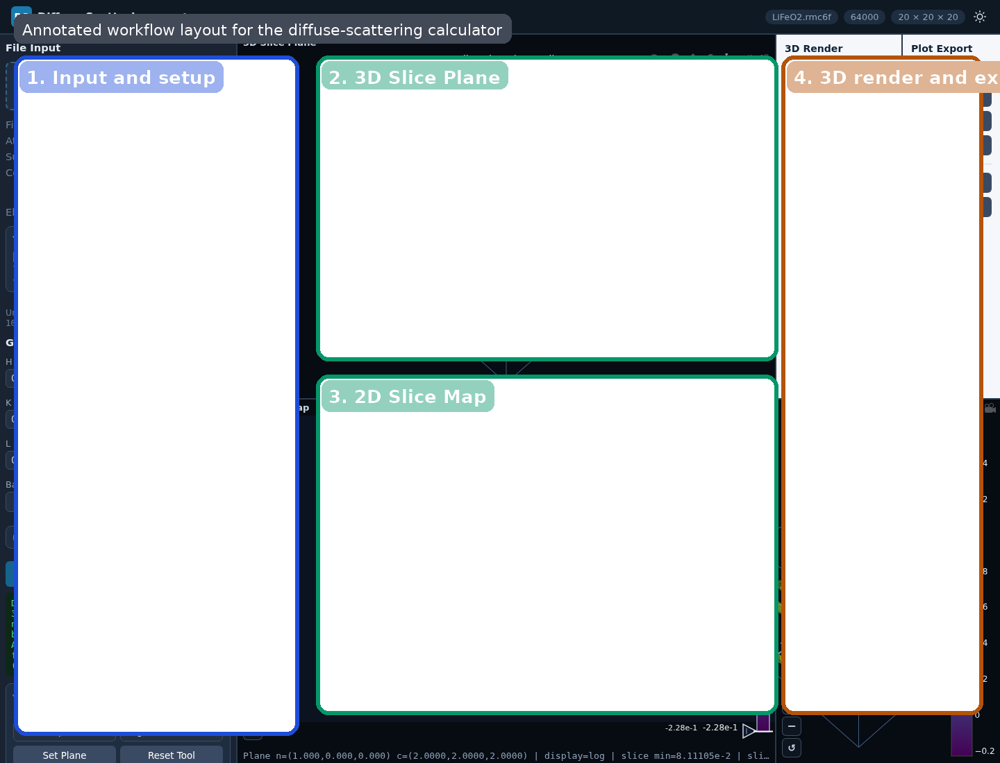

What This Tool Does
The diffuse-scattering tool computes reciprocal-space diffuse intensity I(h,k,l) directly in the browser from an .rmc6f atomistic configuration. It is intended for interactive exploration of diffuse features rather than for inverse reconstruction.
Quick Start
- Open the tool.
- Load an
.rmc6ffile. - Choose a backend: WebGPU first, CPU FFT if WebGPU is unavailable.
- Set the reciprocal-space grid and press Compute Diffuse.
- Inspect the 3D Slice Plane, 2D Slice Map, and 3D Isosurface.
Input: .rmc6f
Output: diffuse volume + slices + exports (.dat/.json/.vtk/.cube/.csv/.svg/.html)
LiFeO2.rmc6f. The main workflow areas are the input/setup panel on the left, the 3D Slice Plane at top center, the 2D Slice Map below it, and the 3D render/export controls on the right.Precision Notice
fp32) and do not provide fp64 arithmetic. Small numerical differences, rounding-sensitive behavior, or precision-related artifacts can appear, especially for large grids, high dynamic range, or cancellation-sensitive features. For important scientific checks, compare against type3NufftCpuDirect and test whether the interpretation is stable with respect to backend and grid settings.Major Views
| View | Purpose |
|---|---|
| 3D Slice Plane | Shows a planar cut through the diffuse volume in reciprocal space. |
| 2D Slice Map | Shows the current slice in a 2D coordinate frame for easier inspection of diffuse features. |
| 3D Isosurface | Shows a constant-intensity contour view of the diffuse volume. |
How To Read The Views
- Localized superlattice condensation appears as concentrated intensity near specific reciprocal positions.
- Manifold-like or sheet-like short-range-order scattering appears as extended diffuse surfaces.
- Rod-like diffuse scattering indicates strongly anisotropic correlations.
- Changing the plane position reveals how the same diffuse object intersects different slices.
For sample-specific examples of these patterns, see the examples guide.
Slice Modes
| Mode | Meaning |
|---|---|
| Axis | Fix one reciprocal-lattice coordinate and inspect a conventional crystallographic section. |
| Normal plane | Define a custom plane by its normal and slide it through reciprocal space. |
| Volume average | Average the diffuse intensity over a slab around the current plane. |
Volume Average Mode
Volume average mode is designed for broad or noisy diffuse features. Instead of sampling one infinitely thin plane, the calculator evaluates multiple parallel planes and averages them into a slab view.
- Slab ±: half-thickness of the slab in HKL units. Larger values integrate through a thicker reciprocal-space region.
- Slab N: number of sample planes inside the slab. Larger values give a denser average through the same thickness.
Use this mode when a single normal plane looks too sparse, noisy, or overly sensitive to exact plane placement.
Advanced Calculation Controls
| Control | Purpose |
|---|---|
| Subtract avg | Subtract the coherent average-structure contribution so the result emphasizes diffuse scattering rather than the total intensity including Bragg-like contributions. |
| Aavg N | Choose whether the average subtraction uses all atoms or only the atoms currently included by the element filter. |
| Normalize Nq | Normalize by the reciprocal-space grid size so runs at different resolutions are easier to compare. |
| Viewer scale | Choose log10 or linear display scaling for the diffuse intensity. |
| Base name | Controls the base filename used by the export actions. |
See Theory for the equations behind these controls.
Element Filter
The Element Filter is an experimental feature that lets you include or exclude specific elements from the scattering calculation. This is useful for partial diffuse-scattering views, but it changes the meaning of normalization and average subtraction, especially when Aavg N is set to N included.
Smoothing Controls
The advanced Smoothing controls operate on the computed 3D intensity volume before visualization.
- Smooth 3D: enable or disable smoothing of the diffuse volume.
- Filter: choose between Lanczos and Chebyshev.
- Cheb dB: controls the Chebyshev attenuation parameter.
- Scale: controls the smoothing kernel size relative to the supercell-driven baseline.
Lanczos is a good general-purpose smoothing filter. Chebyshev is more tunable and can produce stronger suppression of ringing depending on the chosen dB value.
Backends And Scattering Choices
- WebGPU: fastest interactive path when supported by the browser/GPU.
- CPU FFT: the preferred fallback when WebGPU is unavailable.
- Direct CPU: slower reference path for difficult or smaller cases.
The UI also supports neutron, X-ray, and electron scattering options with model/table selection.
Practical default grid-limit presets are backend-dependent: the WebGPU preset uses 8,000,000 voxels, while the CPU FFT and direct CPU presets use 120,000 voxels. These are practical defaults, not hard physical limits, but they are the right starting point for sizing runs.
Supplementary Material
Backend provenance, scattering-table families, and citation-oriented notes are collected in Diffuse Scattering Supplementary.
3D Render Controls
- Iso percentile: selects the intensity percentile used for the isosurface threshold. For example, 95 means the isosurface is built from the top 5% of intensity values in the sampled 3D volume.
- Surface count: number of isosurfaces rendered.
- 3D voxel cap: downsampling limit used before isosurface rendering to keep the 3D view tractable.
Exports
- Diffuse volume:
.dat,.json,.vtk,.cube - 2D slice: CSV and SVG
- 3D plots: Plotly HTML and SVG exports
Base name controls the export filename prefix. Open Slice Window opens the current 2D slice in a separate browser window for side-by-side comparison. VTK and Cube export expect uniform axes; if the reciprocal axes are not uniform, those exports are intentionally rejected by the tool.
For sample-specific workflows, use the examples guide.